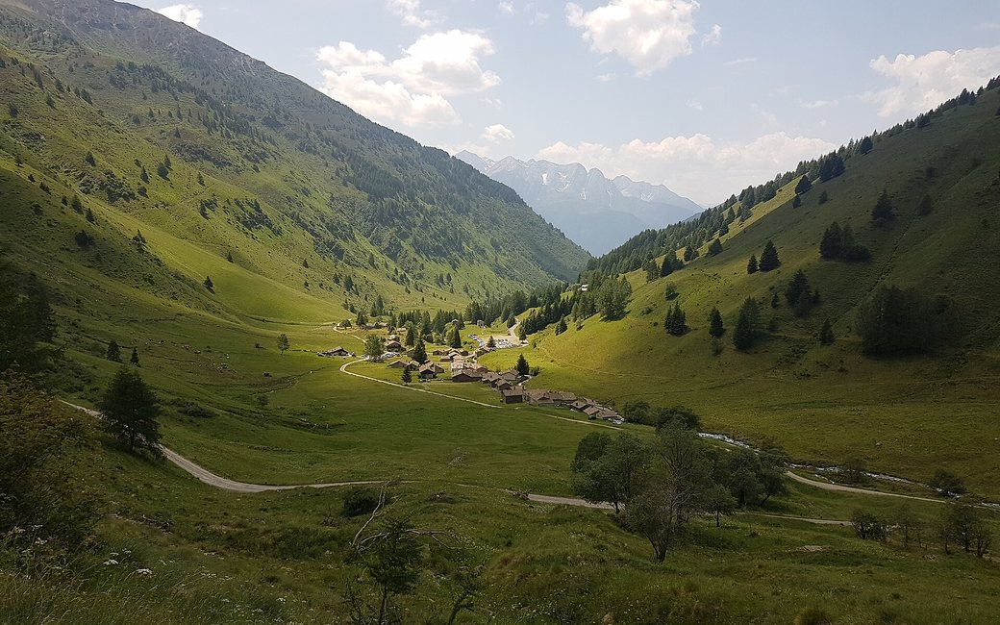

su per la strada militare della Prima guerra mondiale da Case di Viso al Rifugio Bozzi nel Parco Nazionale dello Stelvio, andata e ritorno; cani solo dal 15 luglio al 15 settembre

Una lunga passeggiata estiva nel Parco Nazionale dello Stelvio sopra Ponte di Legno, su per la strada militare della Prima guerra mondiale da Case di Viso al Rifugio Bozzi nella Conca del Montozzo, con il suo piccolo museo della guerra e le trincee restaurate, con ritorno per la stessa via. Turismo Valle Camonica indica 6,4 km in sola andata; andata e ritorno sono 12,8 km con 606 m di salita e di discesa, circa 4 h 45. I cani possono venire solo dal 15 luglio al 15 settembre.
Finisce lontano dalla partenza: prevedi un impianto, un autobus o una seconda auto per tornare.
Ritorno per la stessa via, sullo stesso sentiero.
Consigliato tra maggio e settembre.
Fonte: Outdooractive, consultata il 23 novembre 2026.
Questa passeggiata attraversa la zona B del Parco Nazionale dello Stelvio, nel sito Natura 2000 IT2040044. Lì i cani sono ammessi solo dal 15 luglio al 15 settembre, sui sentieri segnalati e al guinzaglio; nel resto dell’anno non possono entrare nelle zone A e B.
Fonte: Regione Lombardia, D.g.r. X/5928 del 30 novembre 2016 (misure di conservazione Natura 2000 del Parco Nazionale dello Stelvio), consultata il 21 novembre 2026.
Il parcheggio in fondo alla strada a Case di Viso, Ponte di Legno, la partenza indicata
Partenza: Partite dal parcheggio in fondo alla strada a Case di Viso, Ponte di Legno, la partenza indicata; da Ponte di Legno prendete la SS300 verso il Passo Gavia e svoltate per Case di Viso.
Numeri dei sentieri e percorso: Attraversate il borgo di Case di Viso sulla via acciottolata, poi seguite il sentiero 152, la vecchia strada militare della Prima guerra mondiale, che risale la Valle di Viso con ampi tornanti. Verso la fine un breve sentiero di montagna (sentiero 102) porta al Rifugio Bozzi nella Conca del Montozzo, vicino al museo della guerra e alle trincee restaurate. Tornate per la stessa via.
Dove cambiare sentiero: La via acciottolata attraverso Case di Viso; sentiero 152, la strada militare sterrata su per la Valle di Viso; sentiero 102, gli ultimi 0,2 km di sentiero di montagna fino al Rifugio Bozzi; ritorno per la stessa via.
Venite tra il 15 luglio e il 15 settembre, le uniche settimane in cui il parco ammette i cani su questo sentiero, e tenete il cane al guinzaglio. Parcheggiate in fondo alla strada a Case di Viso: 6,4 km su per la strada militare fino al Rifugio Bozzi, circa 2 h 15 come indica Turismo Valle Camonica, e ritorno per la stessa via, circa 4 h 45 in tutto secondo la stima DIN 33466 di ORMA. Portate acqua e una museruola.
La valutazione qui sopra descrive la montagna ed è la stessa per ogni cane. Quanto sia adatto al tuo dipende da corporatura, età e salute. Vedi la compatibilità di questo percorso: è calcolata per un cane di taglia media finché non aggiungi il tuo, gratis e in un minuto.
Prima di partire: la guida sicurezza cani · acqua per il cane sul sentiero · cani in funivia · incontrare un cane da guardiania